제 1 장 서 론
기술이 복잡하고 높은 수준의 시스템 통합(system integration)이 필요한 산업일수록 후발주자가 새롭게 진입하여 기술 추격을 하는데 어려움이 있다. 선발주자들은 추격 위험을 최소화하기 위해 기술의 복잡성을 유지하면서 그들이 가진 지식을 암묵적 지식으로 유지하고, 경험의 축적이 중요한 유산적 지식으로 보유하고자 한다. 항공산업은 바로 이러한 특성을 모두 가지고 있다. 우리가 복잡하다고 생각하는 자동차는 3 만개의 부품으로 이루어져 있는 반면, 항공산업의 전투기는 약 20 만개의 부품으로 이루어져 있을 정도로 모든 산업을 통틀어 가장 복잡하다는 특성을 가진다
항공산업이 가진 복잡성으로 인해 높은 수준의 시스템 통합 능력을 필요로 한다는 특징 외에도 국가 전체로 봤을 때도 전략적으로 중요한 산업이다. 항공산업은 국가 안보와 직접적인 연관이 있어 기술패권이 가장 노골적으로 나타나는 산업이며 고부가가치 산업이기에 정부 주도로 산업 발전이 이루어진다는 특징이 있다. 국가 안보 측면에서 항공산업은 대부분의 기술들이 군사적 목적으로 사용될 수 있기 때문에 국가간 이전이 엄격하게 제한되어 있어 먼저 우위를 차지한 선발주자가 시장을 점유하는 선발 주자 이점(first mover advantage)이 작용하는 산업이다. 또한 산업적 측면에서 주요 선진국들은 WTO 체제에서도 항공산업을 국가 전략산업으로 적극 육성을 하고 있으며, 해당 선진국들 전체 GDP 에서 항공산업이 차지하는 비중이 1%가 넘을 정도로 산업적 중요성도 크다. 특히 최근 미∙중 기술패권이 본격화되고 러시아-우크라이나 전쟁으로 인해 항공산업이 가지는 국가적 중요성이 산업 육성의 측면을 넘어서서 국가 안보와 기술 주권의 문제로 격화되고 있다.
이와 같은 항공산업의 중요성이 부각됨에 따라 우리나라 정부는 99 년부터 항공산업을 지원 및 육성하기 위해 항공우주산업개발 촉진법에 따라 10 년 단위의 기본 계획인 항공산업발전 기본계획을 3 차례에 걸쳐 수립하여 장기적이고 종합적인 지원을 해왔다. 정부의 지속적인 지원정책을 바탕으로 항공산업은 군 완제기 개발능력을 확보하고 민간 항공기 부품 수출 기반을 확대하는 성과가 있었다(관계부처 합동, 2021). 이러한 성과들 중 우리나라는 KF-16 면허생산부터 시작해 T-50 고등훈련기, 수리온(KUH) 개발 및 수출 성공까지 30 년이라는 짧은 기간 동안 모두 성공한 유일한 국가로서 세계 항공산업 역사에서 찾아보기 힘든 사례를 이뤄냈다. 이러한 사례는 1999 년 설립된 이래 지속적으로 항공 산업에서 ‘한국 최초’의 역사를 써온 한국항공우주산업(KAI)의 주도 하에 이뤄졌는데, ‘우리나라 항공우주산업의 역사는 한국항공우주산업(KAI)의 역사다’라는 말이 있을 정도로 한국항공우주산업(KAI)는 우리나라 항공산업에 큰 기여를 해왔다. 특히 한국항공우주산업(KAI)이 전세계 8 번째로 개발에 성공한 T-50 초음속기 개발 성공 사례는 일반적인 항공기 개발 단계인 면허생산-기본훈련기-고등훈련기-초음속기의 단계를 따르지 않고 면허생산에서 곧바로 초음속기 개발에 성공한 세계적으로 전후무후한 사례이다. 또한 T-50 개발 성공 이후에 T-50 은 전술입문기(TA-50) 및 경공격기(FA-50)로 개조 개발되어 전세계 시장에서 동급 기종 대비 높은 수출 성과를 내고 있는 세계 시장에서도 눈여겨 볼만한 사례이다.
따라서 본 연구에서는 T-50 개발 성공 사례를 바탕으로 세계 항공산업에서 후발주자였던 한국항공우주산업(KAI)이 어떻게 초음속기 기술개발에 성공했으며, 기술개발 성공을 바탕으로 어떻게 시장에서도 성공했는지를 살펴보고자 한다. 또한, 해당 사례 연구를 통해 항공산업을 육성하고자 하는 후발주자들에게 주는 시사점이 무엇인지를 도출하여 향후 항공산업에 새롭게 진입하고자 하는 후발주자들에게 하나의 이정표를 제공하고자 한다. 본 연구는 다음과 같이 구성되어 있다. 제2장에서는 항공산업 특성, 국가전략기술, 기술혁신 속성, 암묵지와 형식지, 파괴적 혁신에 대한 이론적 배경을 살펴보고, 제3 장에서는 이를 바탕으로 연구 가설을 세울 것이다. 제4 장에서는 T-50 개발 성공 사례에 대한 분석을 제시하고, 제5 장에서는 사례분석을 바탕으로 도출한 성공요인을 살펴볼 것이며, 제6 장에서는 본 연구의 결론 및 시사점에 대해 제시할 것이다.
제 2 장 이론적 배경
2.1 항공산업 특성
항공산업은 <표 1>과 같이 항공기를 개발하고 생산하는 항공기 제조산업, 생산된 항공기를 활용하여 운항 서비스를 제공하는 항공 운송산업과 항공기를 정비하고 개조 및 개량하는 서비스를 제공하는 MRO(Maintenance, Repair, Overhaul) 산업으로 구분된다. 이를 기업 특성에 따라 다시 분류하면 기체, 엔진, 부품 등을 제작 또는 조립하여 항공기 자체를 제작하는 완제기 제작사, 부품과 엔진을 제작하여 완제기 제작사에 공급하는 부품/엔진 제작사, 항공기 정비 및 개조/개량 서비스를 제공하는 MRO 사와 항공 운항 서비스를 제공하는 항공기 운항사로 구분된다.
<표 1> 항공 산업 분류(산업, 기업)
* 출처 : 관계부처 합동(2021.2.) “제 3 차 항공산업발전 기본계획(‘21~’30)” 재구성
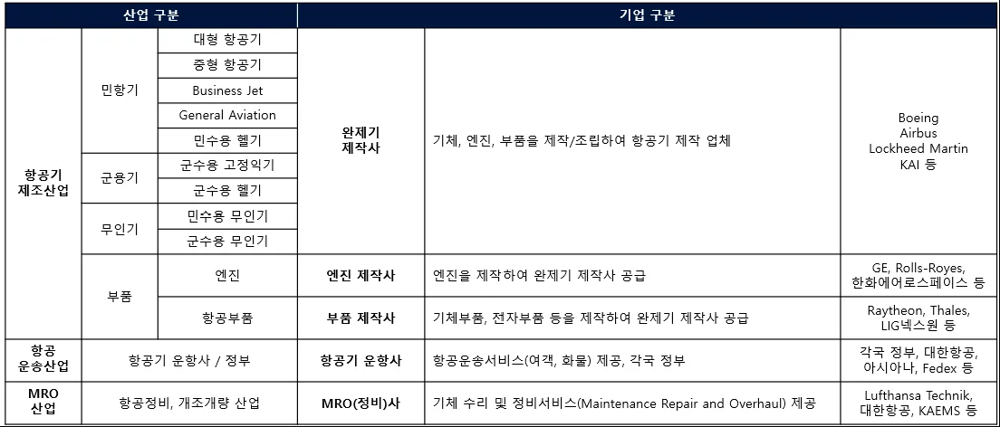
이들 기업들은 <그림1>과 같이 가치사슬 상 서로 매우 유기적으로 상호작용하게 된다. 엔진/부품 제작사가 완제기 제작사에 엔진 및 부품을 납품하게 되면 완제기 제작사는 전투기 기준으로 20 만개가 넘는 부품을 종합하여 항공기를 제작하게 된다. 제작된 항공기는 민항기의 경우 항공기 운항사에 납품되게 되며, 군용기의 경우 각국 정부에 납품하게 된다. 항공기 운항사와 각국 정부가 항공기를 운용하면서도 엔진/부품 제작사와 완제기 제작사는 필요에 따라 부품 공급을 하게 되고 MRO 사는 기체 수리 및 정비 서비스를 30 년이라는 항공기 운용 기간 동안 제공하게 된다.
<그림 1> 항공 산업 가치사슬
* 출처 : 관계부처 합동(2021.2.) “제 3 차 항공산업발전 기본계획(‘21~’30)” 재구성
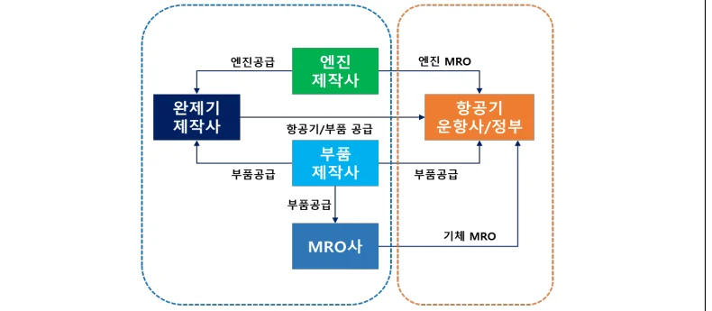
본 연구에서는 항공기 제조산업 분류 중 우리가 일상생활에 흔히 접할 수 있는 민항기 산업이 아닌 군용기 산업을 분석하였는데, 군용기 산업(방위산업)이 민항기 산업과 가지는 차이점은 다음과 같다. 민항기 산업은 시장성(이윤 극대화)이 최우선 목표이며 다수의 구매자(항공사)가 존재하는 시장구조를 가지고 있다. 이에 따라, 민항기를 구매하는 수요자들은 가격과 품질에 민감하며 기업의 가격 설정, 이윤, 생산량이 시장에 의해 결정되는 특징을 가진다. 반면에, 군용기 산업(방위산업)은 공공성(국가 안보)이 최우선 목표이며 소수의 구매자(정부)만 존재한다. 군용기를 구매하는 정부는 국가 안보상의 목표를 달성하기 위해 최고 성능을 추구하며 이를 생산하는 기업들의 가격 설정, 이윤, 생산량은 정부에 의해 일정 부분이 결정되는 특성을 가진다.
항공산업의 대표적인 3 가지 특성은 다음과 같다. 첫째, 항공산업은 안보 및 산업발전 측면에서 국가 전략산업이다. 항공산업은 자주 국방과 직접적으로 연결되고, GDP 3 만달러 이상의 선진국들이 항공우주산업을 WTO 체제에도 불구하고 전략산업으로 적극 지원할 정도로 국가 전략적으로 중요한 산업이다. 둘째, 항공산업은 기술적 측면에서 다양한 기술분야가 융합된 기술 집약산업이다. 항공기를 개발할 때 첨단소재, 전자, 기계, 통신, IT 와 같은 다양한 기술이 모두 접목되어 전 산업분야와 연계가 활발히 이루어진다. 셋째, 항공산업은 창출하는 가치 측면에서 고부가가치 산업이다. 항공기 1 대를 개발할 때 최소 1,000 명의 R&D 인력이 필요하며, 이를 생산할 때도 마찬가지로 대부분의 제조공정이 정밀 수작업으로 이루어져 일자리 창출효과가 크다. 또한, 전투기 1 대 수출이 국산 중형차 1,000 대를 수출하는 효과가 있다고 할 정도로 부가가치가 큰 산업이며, 판매를 한 이후에도 항공기가 30 년 동안 운용되어 장기간 수익창출이 가능한 산업이다. 위와 같은 항공산업의 일반적인 특성 외에 항공산업은 타 산업 대비 특수성을 가진다. 항공산업은 <표 2>에서 확인할 수 있듯이 대규모 자본 및 생산체계를 요하는 산업(조선, 자동차)과 비교를 해봐도 가장 복잡하고 높은 수준의 시스템 통합 능력을 필요로 한다. 개발기간 측면에서 자동차는 평균 1.5 년, 조선은 평균 5 년이면 개발이 완료되는 반면에, 항공 산업은 평균 10 년이 소요되는 장주기 산업이다. 또한, 부품 수 측면에서도 자동차는 3 만개, 조선은 10 만개 정도로 이루어져 있는 반면에, 항공산업은 전투기의 경우 20 만개, 대형 여객기의 경우 400 만개의 부품으로 이루어져 있을 정도로 가장 복잡하고 시스템 통합이 어렵다는 특징을 가진다.
<표 2> 타 산업 대비 항공 산업이 가지는 특성
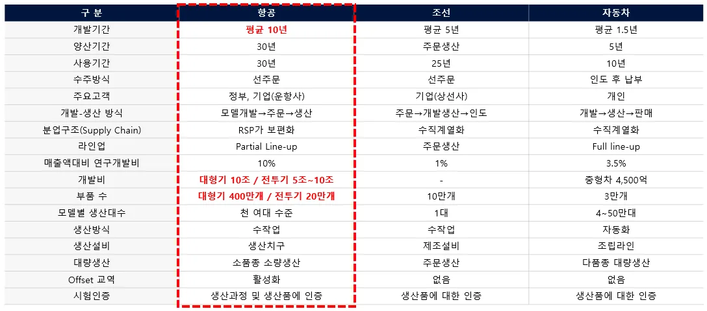
2.2 국가전략기술
미∙중 간 무역 전쟁으로 시작된 경쟁은 경제적 의미를 넘어 기술 패권 경쟁의 양상으로 나타나고 있으며, 국가차원의 기술주권(technology sovereignty) 문제로 확산되고 있다. Edler et al.(2020)에 의해 정의된 기술주권은 어떠한 국가의 경쟁력 발휘를 위해 없어서는 안될(critical) 기술을 공급하거나 다른 국가로부터 의존없이 획득할 수 있는 역량을 의미한다. 국가가 기술주권을 확보하기 위해서는 국가 전략적으로 중요한 전략 기술(critical technology)을 정확히 파악하는 것이 중요하며 최근 국가 안보 및 산업적 측면에서 그 중요성이 더욱 커지고 있다. 국가전략기술 정의에 대해서는 정부에 의한 정책적 정의로 대부분 이루어졌는데 「국가 필수전략기술 선정 및 육성∙보호전략」에서는 “글로벌 기술패권 경쟁구도 속에서 한국의 기술주권 확보를 목적으로 주도권과 협상력을 갖기 위해 상대국이 필요로 하는 분야”로 정의하고 있다(백서인 외., 2021). 2023 년 3 월에 제정된 「국가전략기술 육성에 관한 특별법」에서는 국가전략기술을 외교안보 측면의 ∙전략적 중요성이 인정되고 국민경제 및 연관 산업에 미치는 영향이 크며 신기술∙신산업 창출 등 미래 혁신의 기반이 되는 기술로 정의하고 있다. 위와 같은 정의들을 종합하자면 국가전략기술은 국가 수준에서 국가안보 또는 경제적 번영을 위해 필수적인 전략기술로 정의할 수 있다.
글로벌 패권 경쟁에 대응하고 국가전략기술을 육성하기 위해 주요 선진국들은 공통적으로 대부분 10 개 내외의 전략기술을 선정하여 집중적으로 육성하고 있다. 미국은 10 대 핵심기술을 선정하고 국립과학재단(NSF, National Science Foundation) 내 기술혁신국을 신설하여 5 년간 1,500 억 달러를 집중투자하고 있다. 중국은 14 차 5 개년 규획을 통해 7 대 과학기술과 8 대 산업 집중 육성하기 위해 연구개발투자비를 연 7% 이상씩 확대해 나가고 있다(과학기술정보통신부, 2021. 12.). 우리나라도 이에 대응하여 12 대 국가전략기술(반도체디스플레이∙, 이차전지, 첨단 모빌리티, 차세대 원자력, 첨단 바이오, 우주항공해양∙, 수소, 사이버 보안, 인공지능, 차세대 통신, 첨단로봇제조∙, 양자) 및 50 개 세부 중점기술을 선정하여 육성방안을 마련하였으며, 「국가전략기술 육성에 대한 특별법」 제정으로 과학기술 주권을 확립하기 위한 제도 기반을 마련하였다. 본 연구에서 다루고자 하는 항공산업도 무인 비행체의 전장 적용 확대, 도심항공교통(UAM)의 상용화에 따라 전략적 중요성을 인정받아 국가전략기술로 선정되었다. 특히 항공산업 중 방위산업도 최근 불안한 국제 정세와 이에 따른 방산 수출 확대로 안보와 경제를 뒷받침하는 국가적으로 중요한 산업으로 자리잡고 있다.
2.3 기술혁신 속성
Pavitt(1984)은 혁신의 다양한 유형이 산업 분야별로 다를 수 있다는 연구질문을 바탕으로 혁신의 유형을 기술 혁신 패턴의 관점에서 회사 규모, 기술 다양성 측면에서 산업별로 4 가지 유형(공급자 주도형, 규모집약형, 전문공급자형, 과학기반형)으로 분류하였다. 그 중 공급자 주도형의 경우 고객들의 주로 가격에 민감해 비용 절감의 혁신(공정혁신)이 중요하고 기업 규모는 대체로 작으며 혁신의 원천은 대부분 외부 공급자 및 사용자이다. 대표적으로 농업, 주택, 개인 서비스와 전통 제조업과 같은 산업이 이에 해당된다. 규모 집약형도 공급자 주도형과 유사하게 고객들이 주로 가격에 민감해 공정혁신이 중요하지만, 기업 규모는 대체로 크며 혁신의 원천은 기업 내부 또는 연구개발(R&D)을 통해 나타난다. 주로 소재, 내구성 소비재, 자동차 및 대규모 조립형 산업이 이에 해당된다. 전문공급자형의 경우 고객들이 주로 가격보다는 성능에 민감하여 성능을 높이기 위한 제품 설계에 주안점을 둬야하는 제품혁신이 중요한 속성을 가진다. 전문공급자형의 기업 규모는 비교적 작으며, 혁신의 원천은 기업 내 R&D 등 기술 활동 또는 고고객들부터 시작된다. 주로 전문적인 기계, 장비 및 각종 계기 생산업체가 전문공급자형에 해당된다. 마지막으로 과학기반형의 경우 고객들의 유형은 복합적이며, 혁신의 원천은 기업의 R&D 를 통해 나타나거나 대학 또는 연구소에서의 기초과학 연구를 통해 나타난다. 대부분의 기업들의 규모는 크며 주로 전지전자, 화학 산업 등이 이에 해당된다. 각 유형별 특성을 분석 해봤을 때 본 연구에서 다루고자 하는 항공산업(방산)은 고객들이 가격보다는 성능에 민감하다는 점, 기술혁신 원천이 디자인 및 사용자로부터 시작된다는 점과 전유성을 주로 디자인, 노하우, 사용자 지식, 특허로 가져간다는 점에서 전문자 공급형에 해당된다.
Pavitt(1984)의 혁신 유형 분류 외에 Hobday(1998)는 기술의 복잡성, 제품 특징, 생산 특징, 혁신 과정과 시장 특성의 측면에서 대량생산제품(Mass Produced Goods)과 구별하기 위해 복합제품시스템(Complex Product System)이라는 개념을 제시했다. 복합제품시스템은 계층화되어 있는 다양한 부품∙서브시스템이 긴밀히 통합되어 기능을 구현하고 고도의 기술적 기능을 제공하는 제품을 의미한다(Hobday, 1998). 대량생산제품과 복합제품시스템을 아래 특징별로 비교해보면 다음과 같다. 첫째, 제품 특징 측면에서 대량생산제품은 단순한 인터페이스, 단일 기능을 요구하지만 복합제품시스템은 부품과 서브시스템이 복잡하며 성능 최적화를 요구한다는 특징을 가진다. 둘째, 대량생산제품은 대량생산으로 제품이 생산되는 반면에 복합제품시스템은 소량생산으로 생산이 이뤄진다. 셋째, 혁신과정 측면에서 대량 생산제품은 공급자 주도(supplier driven)로 혁신이 이뤄지는 반면에 복합제품시스템은 사용자 및 생산자 주도(user-producer driven)으로 이뤄진다. 넷째, 대량생산제품은 체계적인 공급사슬구조를 이루고 이에 따라 명확한 분업이 이뤄지는 반면에 복합제품시스템은 공급사간 높은 수준의 조정과 협력을 필요로 한다는 특징이 있다. 마지막으로, 시장 구조를 봤을 때 대량생산제품은 완전경쟁 시장구조를 가지는 반면에 복합제품시스템은 과점적 시장구조를 가진다. 본 연구에서 다루고자 하는 항공산업(방산)은 전투기의 경우 약 20 만개의 부품으로 이루어져 있어 제품이 굉장히 복잡하고, 국내의 경우 생산량이 약 100 대에서 200 대 수준으로 생산되는 소량생산이라는 특징을 가진다. 또한 항공기를 구성하는 부품 및 서브시스템이 상호 밀접히 연관되어 있어 공급사간 높은 수준의 조정과 협력을 필요로 하며 진입장벽이 높아 몇 개의 업체만 시장에 존재하는 과점적 시장구조를 가진다. 이러한 특징들을 종합해 봤을 때 항공산업(방산)은 전형적인 복합제품시스템에 해당된다.
2.4 암묵지와 형식지
지식(knowledge)의 표현 가능성에 따라 Polanyi(1958)는 지식을 암묵지(tacit knowledge)와 형식지(explicit knowledge)로 구분하였다. 이때 암묵지는 개인의 경험으로 받아들여지고 말이나 글로써 표현되기는 어려운 추상적이고 개인적, 비체계적인 지식을 의미한다. 즉 암묵지는 노하우, 영업비밀과 같이 추상적이며 비공식적인(informal) 지식을 의미한다. 반면에 형식지는 말이나 글로써 간단하게 표현되고 타인들에게 쉽게 전달되어질 수 있는 구체적이고 공식적, 체계적 지식이다. 이를 바탕으로 Nonaka(1994)는 암묵지와 형식지 사이에 서로 상호작용하는 지식창조 과정을 4 단계의 나선형 모델로 제시했다. 첫째, 사회화(socialization) 단계에서는 암묵지를 타인에게 전달해 또 다른 암묵지를 만들어내며 개인은 경험을 통해 지식을 습득하게 된다(암묵지→암묵지). 둘째, 표출화(externalization) 단계에서는 암묵지를 형식지로 구체화하는 과정을 의미하며, 지식을 말이나 글로 표현하여 타인에게 전달하게 된다(암묵지→형식지). 셋째, 연결화(combination) 단계에서는 구체화된 형식지들이 다시 새로운 형식지로 조합되고 편집되는 과정을 거쳐 더 복잡하고 체계적인 또 다른 형식지로 창출된다(형식지→형식지). 넷째, 내면화(internalization) 단계에서는 형식지를 이해하고 습득하면서 이를 다시 암묵지로 변환하여 내면화하는 과정을 거치게 된다(형식지→암묵지).
암묵지와 형식지 측면에서 항공산업(방산)이 가지는 특성을 살펴보면, 항공산업(방산)은 대표적인 복합제품시스템 특징을 가지는 시스템 통합 산업으로 말이나 글로써 표현되기 힘든 과거로부터의 경험 축적도가 중요하게 작용하는 산업이다. 항공기에 대한 개별 구성품 또는 부품에 대한 지식은 말이나 글로써 쉽게 일반화될 수 있으나 그러한 지식을 하나의 시스템으로 통합하는 지식은 추상성을 가지게 되며 과거로부터 축적해온 경험이 중요하게 작용하게 된다. 그렇기 때문에 항공산업(방산)은 유산적 지식(heritage knowledge)이 중요하게 작용하며 암묵지에 해당되는 산업이다.
2.5 파괴적 혁신
기업은 갈수록 치열해지는 경쟁 속에서 생존하기 위해 지속적인 혁신을 요구받게 된다. 기존의 경영 혁신에 있어서는 점진적인 개선을 지속하는 존속적 혁신(sustaining innovation) 중심으로 논의되어 왔으나 Christensen(2013)이 제시한 파괴적 혁신(disruptive innovation)으로 인해 기업 경영 혁신에 대해 새로운 시각으로 바라보게 되었다. 파괴적 혁신은 덜 까다로운 고객들을 대상으로 간단하고 편리하며 저렴한 제품을 공급함으로써 기존의 시장 질서를 파괴하고 새로운 시장을 창출하는 혁신을 의미한다(Christensen, 2013). 파괴적 혁신이 나타나는 과정을 살펴보면 다음과 같다. 기존 기업들은 존속적 혁신의 궤적을 따라 발전해 나가는데 어느 순간 존속적 혁신이 고객들의 필요 이상으로 고성능 제품을 제공함으로써 오버슈트(overshoot)하게 된다. 이 순간에 기존기업들에 대응할 역량이 있는 기업들이 저성능, 저비용 제품을 출시하면서 파괴적 혁신이 등장하게 되며, 기존 기업이 파괴로 인해 곤경에 처하게 된다. 이와 같은 파괴적 혁신은 2 가지 종류의 시장에서 시작하게 되는데 그 중 첫번째가 Low-end 시장이다. 기존 기업들은 수익창출이 작은 Low-end 시장을 간과하고 시장의 파괴자들은 처음에는 이 시장에서 적정한 제품을 공급하게 된다. 두번째가 New market 시장인데 시장의 파괴자들은 아무 기업도 존재하지 않는 시장을 만들고 비소비자(non consumer)들을 소비자(consumer)로 만들어버린다.
그렇다면 기존 기업들이 파괴적 혁신을 포착하고 대비하는 것이 어려운 이유가 무엇인지를 살펴보면 기업들이 기존에 가지고 있는 RPV(Resource, Process, Value)를 빠르게 변화시키기 어렵기 때문이다. 기업은 기업이 가지고 있는 자원, 프로세스, 가치의 반복적인 활동을 통해 목표를 달성하게 되며 이를 통해 존속적 혁신을 하게 된다. 반면 파괴적 혁신의 경우 기존의 자원, 프로세스, 가치를 기반으로 곧바로 실행할 수 없는 한계점을 가지고 있기 때문에 파괴적 혁신이 오고 있다는 것을 알고 있더라고 대비하기 힘든 것이다. 즉, 새로운 기술 및 시장이 필요로 하는 자원, 프로세스와 가치 네트워크가 기존 조직의 자원, 프로세스와 가치 네트워크와 일치하지 않기 때문에 결국 실패하게 된다.
제 3 장 연구 가설
3.1 연구 가설
이론적 배경에서 논의된 바와 같이 항공산업은 자주 국방과 경제발전에 직접적으로 연결되는 안보 및 산업발전 측면에서 중요한 국가전략기술이다. 동시에 항공산업은 전투기의 경우 20 만개, 대형 여객기의 경우 400 만개의 부품으로 이루어져 있을 정도로 가장 복잡하고 시스템 통합이 어려운 특징을 가진 복합제품시스템 산업이다. 이러한 복잡성으로 인해 지식은 추상성을 가지게 되며 말이나 글로써 표현되기 힘들어지며 이에 따라 과거로부터의 경험 축적도가 중요하게 작용하게 된다. 기술개발 측면뿐만 아니라 시장 측면에서도 미국과 유럽의 항공 기업들의 항공산업에서 차지하는 독점적 지위는 이러한 특징들로 인해 나타난다. 이러한 특성들을 종합했을 때 항공산업은 후발국 또는 후발주자가 기술 추격뿐만 아니라 시장에서도 성공하기 힘든 분야로 인식된다. 그럼에도 불구하고 우리나라 한국항공우주산업(KAI)은 T-50 초음속기 전투기 기술개발에 성공했으며 세계 시장에서도 높은 수출 실적을 달성하며 성공가도를 달리고 있다. 따라서 본 연구에서는 항공산업의 후발주자이자 F-16 면허생산 경험만 가지고 있었고 축적된 전투기 개발 경험이 전혀 없었던 우리나라 한국항공우주산업(KAI)이 어떻게 기술개발과 시장에서 성공할 수 있었는가에 대한 답을 아래 3 가지 연구질문을 바탕으로 풀어보고자 한다.
첫째, 항공기(전투기) 개발 후발주자인 한국항공우주산업(KAI)이 기술 개발(추격)에 성공한 요인은 무엇인가?
둘째, 항공기(전투기) 시장에서 후발주자였던 한국항공우주산업(KAI)가 시장에서 성공한 요인은 무엇인가?
셋째, 기술추격이 필요한 국가전략기술 중 하나인 우주∙항공 산업의 성공 요인은 무엇인가? (항공산업을 육성하고자 하는 후발주자들에게 주는 시사점은 무엇인가?)
3.2 연구 흐름
설정한 연구질문에 대한 답을 찾기 위해 본 연구에서는 <그림 2>와 같은 연구흐름을 바탕으로 연구를 진행하였다. 국가전략기술(우주∙항공) 추격 성공요인을 연구하기 위해 우선 T-50(FA-50) 사례 분석을 실시하였다. T-50(FA-50) 사례는 기술 개발을 진행하던 기술개발기와 개발이 완료되어 실제 시장에 판매되기 시작한 시장진입기로 구분하여 분석하였다. 이를 바탕으로 개발 성공 및 시장 진입으로 기업이 얻은 성과(기술적 성과, 경영적 성과)가 무엇인가에 대한 분석을 진행하였다. 앞선 두가지 프로세스를 바탕으로 기술개발 및 시장 성공요인을 분석하였으며 이를 바탕으로 후발주자들에게 줄 수 있는 시사점을 최종적으로 도출하였다.
<그림 2> 연구 흐름
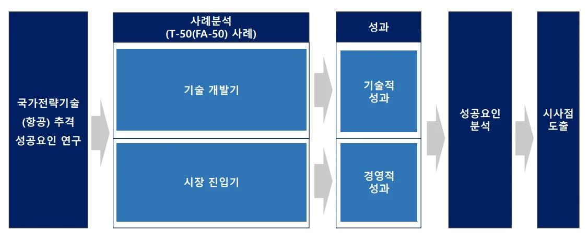
제 4 장 사례분석
4.1 사례 연구기업 요약
한국항공우주산업(KAI)은 1999 년에 삼성항공우주산업, 대우중공업, 현대우주항공 3 사가 통합하여 만들어진 국내 유일의 항공기 체계종합 업체이다. 본사는 경남 사천에 위치하고 있으며 약 5 천명의 인원이 근무중이다. 영위하고 있는 사업으로는 T-50 계열(T-50, TA-50, FA-50 등), KF-21 계열과 같은 고정익 사업, KUH 계열(군수, 관용), LAH 계열(군수)과 같은 회전익 사업, Boeing 과 Airbus 와 같은 민항기에 들어가는 기체구조물을 납품하는 기체부품 사업과 위성, 발사체와 관련된 우주 사업과 무인기 사업 등이 있다. 주요 주주 구성을 봤을 때 한국수출입은행과 국민연금공단이 최대주주로 있는 공기업적 성격이 강한 회사로 볼 수 있다. ‘23 년 경영실적을 봤을 때 매출액은 3 조 8,193 억원, 영업이익이 2,475억원이 나오는 회사이다. ‘23 년 기준으로 매출구성을 구체적으로 나눠보면 전체 매출액 중 약 51%가 국내사업(군수), 약 21%가 기체부품 사업, 약 28%가 완제기 수출이 차지하고 있다. 우리나라 항공 제조산업에서 한국항공우주산업(KAI)이 차지하는 위치를 살펴보기 위해 국내 항공 제조산업 전체 7 조 매출액 중 한국항공우주산업(KAI)의 매출 점유율을 살펴본 결과는 <표 3>과 같다. 전체 7 조 매출액 중 한국항공우주산업(KAI)이 차지하는 점유율이 44%가 넘을 정도로 항공 제조산업에 있어서는 우리나라에서 독보적인 기업임을 알 수 있다.
<표 3> 항공 제조산업 주요 업체 매출액(단위 : 억원,%))
* 출처 : 관계부처 합동(2021.2.) “제 3 차 항공산업발전 기본계획(‘21~’30)” 재구성
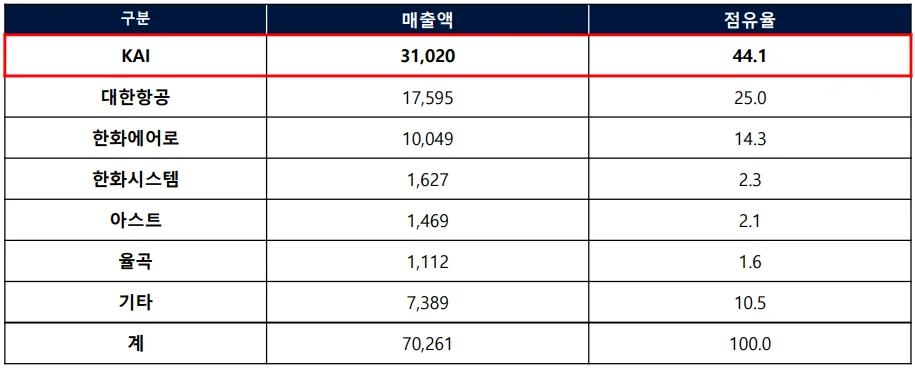
<그림 3> T-50 개발 사업 구도
* 출처 : 한국항공우주산업 창립 20 주년 사사(2019), 안영수, 김성배(2007) “한미간 T-50 항공기
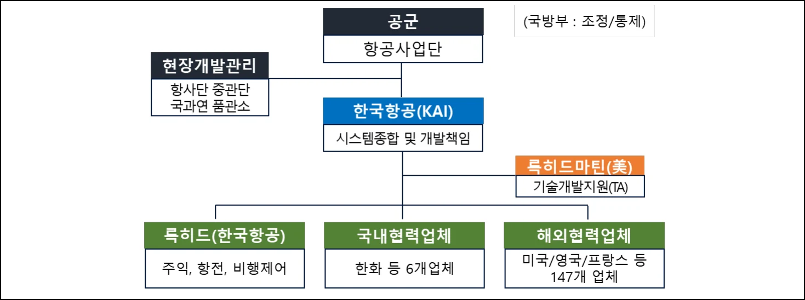
<그림 4> T-50 기술 개발 및 시장 진입 전체 연대기

4.2 T-50 사례 분석
4.2.1 사업 소개
T-50 개발 사업은 공군의 노후화된 훈련기인 T-33 과 TF-5B 를 대체하기 위해 시작된 사업으로 우리나라 최초의 초음속 항공기를 개발하는 목적으로 시작된 사업이다. T-50(KTX-2)으로 명명된 고등훈련기 개발사업은 우리나라 공군의 KFP(Korea Fighter Program) 사업과 연계한 국내 항공산업발전계획의 일환으로 절충교역을 활용하여 시작되었으며, 이후 전술입문기(TA-50)와 경공격기(FA-50)로 개조개발 되었다. T-50 개발 사업은 업체주도 연구개발로 진행되었으며 시스템 종합 및 개발책임을 한국항공우주산업(KAI)이 맡았으며 美 Lockheed Martin 이 기술개발지원을 하는 국제공동개발로 진행되었다. 해당 사업은 1997 년 10 월부터 2005 년 9 월까지 진행되었으며 사업예산은 1 조 7,996 억원이 투입된 대규모 국가 프로젝트였다. 전체 사업예산 1 조 7,996 억원 중 정부가 70%를 부담했으며, 나머지 17%는 한국항공우주산업(KAI), 13%는 美 Lockheed Martin 이 부담하였다. 전체적인 사업구도는 <그림 3>과 같다.
본 연구에서는 앞서 연구흐름에서 제시한 바와 같이 T-50 사업을 기술을 개발하던 시기인 기술 개발기(1990 년~ 2005 년)와 개발이 완료된 후 본격적으로 시장에 판매되기 시작한 시장 진입기(2005 년~2023 년)로 나눠 분석을 진행하였다. 전체적인 연대표(timeline)은 <그림 4>와 같다.
4.2.2 기술개발기
국방 무기체계 연구개발단계는 크게 선행연구 단계, 탐색개발 단계와 체계개발 단계로 이루어져 있다. T-50 개발 사업은 국방과학연구소에서 1989 년 4 월에 고등훈련기 개발을 건의하면서 시작되었으며 이후 국방과학연구소에서 기초연구(선행연구)와 탐색개발을 수행하였으며 1995 년 12 월에 탐색개발을 종료하였다. 이후 바로 이어서 체계개발 단계로 진입하여야 하였으나 사업의 타당성에 대한 논란으로 체계개발 단계로 바로 진입 못하고 단계 전환의 시간을 가지게 되었다. 이후 체계개발 사업에 대한 승인이 1997 년 10 월에 나면서 본격적인 체계개발을 한국항공우주산업이 수행하게 되었다. 전체 개발 기간에 대한 요약은 <표 4>와 같으며 본 연구에서는 선행연구 단계, 탐색개발 단계와 체계개발 단계로 나눠 기술개발기를 살펴볼 것이다.
<표 4> T-50 기술개발 연대기(전체요약)
* 출처 : 전영훈. (2011.) “T-50 끝없는 도전 : 골든이글 신화창조의 비밀을 밝히다” 재구성
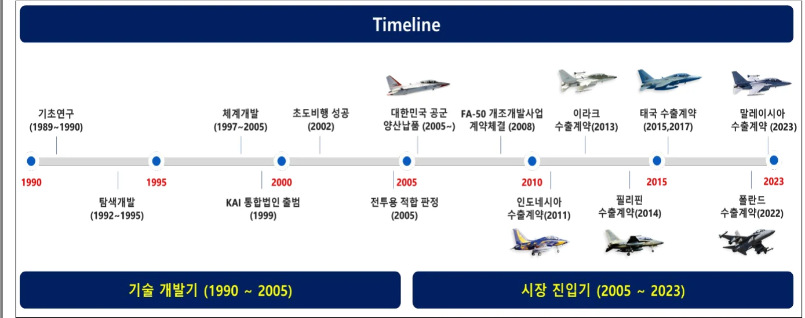
선행연구 단계에서는 무기체계 소요 결정 이후 연구개발 가능성, 현재의 과학 기술 수준에 대해 파악하고 개발에 성공했을 때 산업 육성 효과, 비용 대비 효과와 경제적 타당성에 대한 분석을 진행한다. 당시 우리나라는 항공 관련 과학 기술 수준을 분석 해봤을 때 초음속 항공기를 개발할 기술이 없었다. 이에 따라 공군에서 구매하는 고등훈련기(英 BAE 사)를 활용해 절충교역을 통한 개발 기술을 이전 받는 방안으로 추진되었다. 기술 이전을 위해 BAE 사에 국방과학연구소와 업체 인력(삼성항공, 대우중공업, 대한항공 등)이 2 년 동안 파견되었다. 2 년 동안 기술이전을 받으면서 고등훈련기 설계 기술, 설계 프로그램 소스코드, 시뮬레이터 개발 기술 등을 이전 받았으며 시험비행 조종사를 양성하는 성과가 있었다.
탐색개발 단계에서는 선행연구로 도출된 항공기 체계 개념에 대한 핵심기술을 실질적으로 개발하고 기술의 완성도를 확인해 체계개발 단계로 진행 가능한지를 판단하게 된다. 탐색개발 단계에서도 마찬가지로 1989 년에 공군이 도입하는 차세대 전투기 사업에서 전투기를 구매하면서 General Dynamic(現 Lockheed Martin)으로부터 절충교역을 통한 기술이전을 받았다. 탐색개발 단계를 통해 사업이 더 구체화되기 시작했는데, 첫번째로는 세계 최초로 고등훈련기를 초음속으로 개발하는 것으로 요구도를 설정하는 성과가 있었다. 그때 당시만 해도 훈련기를 초음속과 같은 고성능으로 개발하는 사례가 없었지만 앞으로 세계시장에서 고등훈련기 겸 경전투기로 동시에 활용할 수 있는 항공기에 대한 수요가 높을 것이라는 예상과 차세대 전투기(F-22)와 같은 기종에 탑승할 조종사를 양성하기 위해서는 초음속기 고등훈련기가 필요해질 것이라는 점을 바탕으로 초음속 고등훈련기로 T-50 을 개발할 것을 결정하였다. 두번째로는 19 가지 형상에 대하여 검토하여 기본적인 항공기 외부 형상을 확정 지었다. 세번째로는 美 Lockheed Martin 사의 투자금을 확보하는 성과가 있었는데, 이를 통해 사업의 경제적 타당성을 더욱 확보할 수 있었다. 마지막으로는 기존처럼 체계개발을 국가 연구기관인 국방과학연구소가 수행하는 것이 아니라 업체가 직접 주도하여 개발하는 것으로 결정하는 성과가 있었다. 이는 업체에 체계개발을 맡기면 회사 생사가 달려있어 연구기관이 수행하는 것보다 성공 가능성이 높다는 판단 아래 결정되었는데, 이를 통해 업체의 자생력과 국제경쟁력을 확보할 수 있도록 하는 계기를 마련하였다.
본격적인 체계개발 단계에서는 무기체계를 실질적으로 설계하고 그에 따른 시제품을 생산하여 시험평가를 거쳐 양산에 필요한 국방규격을 완성하게 된다. 전체적인 항공기 체계개발 프로세스는 <그림 5>와 같이 굉장히 복잡한 여러 단계로 구성되어 있으나, 본 사례 분석에서는 이 중 가장 대표적인 기본설계, 상세설계, 시제작/시험평가 단계로 나눠 분석을 진행하였다.
<그림 5> 항공기 체계개발 프로세스
* 출처 : 국방기술품질원. (2020). 무기체계 연구개발단계 품질관리 기술지원 가이드북
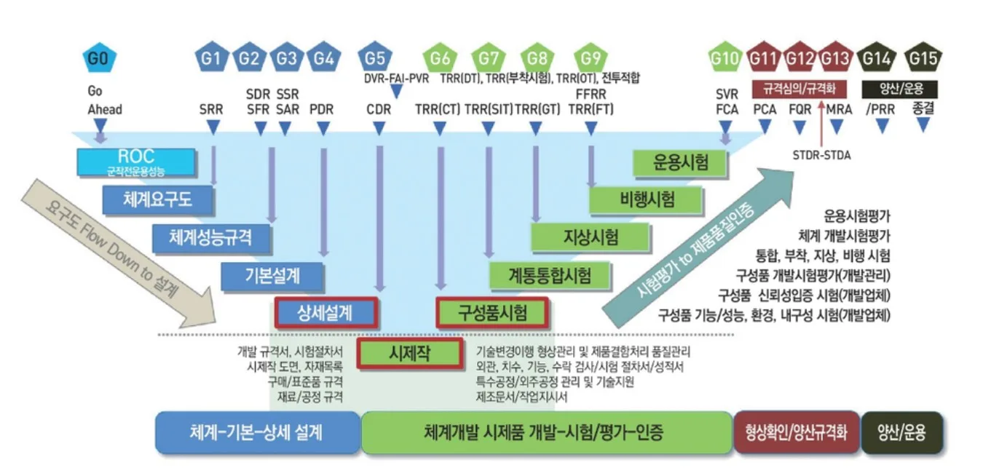
첫째, 체계개발 단계 중 기본설계(preliminary design) 단계에서는 항공기 체계가 그 다음 단계인 상세설계 단계로 진입할 수 있는지에 대한 판단과 비용, 일정, 위험 및 기타 체계 제약사항들 범위 내에서 성능 요구사항들을 만족할 수 있는지를 확인하는 기술적 검토를 수행하게 된다. 해당 단계에서 T-50 은 풍동시험을 통해 설계한 항공기 형상이 공력적으로 어떠한 특성을 가지고 어느 정도의 성능을 가지는지에 대한 평가를 통해 외부형상을 최종 확정 지었다. 또한 확정한 외부형상을 바탕으로 항공기 동체, 날개, 꼬리날개, 조종면 등과 같은 주요 구조물과 각 계통별 장비 배치를 위한 기본 뼈대를 구성하는 기체구조에 대한 기본적인 설계를 진행하였다. 기본설계를 진행하는 동안에 Lockheed Martin 社로부터 파견된 기술지원 인력(Technical assistance)을 통한 1 대1 교습/기술자문을 통해 기술 습득 및 교습성을 극대화하였다. 둘째, 상세설계(critical design) 단계에서는 항공기 체계 및 구성품에 대한 시제 제작 및 구현을 착수할 준비가 되어있는지 확인하는 단계이며 각 형상 항목에 대한 기준선(baseline)을 분석하고 설계 내용을 검토하게 된다. 해당 단계에서 T-50 은 전투기 요구 기능 구현을 위해 각 계통 분야별 장착 및 배치 형상에 대한 설계가 진행되었으며 계통 구성품별 개발 요구도를 구체화하였다. 이에 이어 중량/평형 해석, 성능 해석, 열 해석, 동특성/진동 해석 등과 같은 설계 분석을 상세설계 단계에서 반복 수행하여 항공기 최적화를 수행하였다. 또한 상세설계 단계에서 모든 설계는 100% 컴퓨터를 사용한 설계 프로그램(CATIA)을 활용하여 이뤄졌는데 이는 당시에도 전세계적으로 찾아보기 힘든 이례적인 설계 방식이었다. 당시에는 항공 선진업체들은 항공기 일부분에 국한하여 컴퓨터 설계 프로그램을 활용하였으나 T-50 은 항공기 전체를 적용함으로써 프로그램을 통한 시뮬레이션을 반복 수행해 한치의 오차도 없이 조립이 가능하였다. 셋째, 시제작 및 시험평가(지상/비행) 단계에서는 설계된 도면에 따라 항공기 시제기를 제작하는 절차와 시제기를 제작 완료한 후에 체계 설계가 잘 이루어졌는지 시험평가 계획에 따라 지상 및 비행을 통해 시험을 하는 절차를 수행했다. T-50 은 시제기를 제작하면서 동시공학 설계 및 생산이 이뤄졌는데 이를 통해 생산 이전에 설계 단계에서부터 미리 생산성과 품질요구 조건을 사전 검증함으로써 비용과 일정을 획기적으로 단축시킬 수 있었다. 지상시험 단계에서는 실제 비행에 들어가기 전에 각 시험 요구도를 설정하여 성능 만족 여부를 지상에서 각 계통별로 모두 입증하였다. 그 다음 비행시험 단계에서는 실제 비행을 통해 설계한 요구도에 따라 항공기가 성능을 만족하는지에 대한 시험을 42 개월 동안 진행하였다(2002.8.20. : T-50 시제1 호기 초도비행, 2003.2.18. : 최초 초음속 돌파).
T-50 은 앞서 살펴본 바와 같이 다양한 기관들의 협조 아래 15 년 동안의 길고 험난한 여정을 통해 사업이 진행되었으며 마지막 체계개발 단계에서 한국항공우주산업이 성공적으로 초음속기 개발에 성공하였다. 개발 성공을 바탕으로 T-50 은 본격적으로 양산에 진입하여 시장에 진출하기 시작했다.
4.2.3 시장진입기
T-50 개발 성공 이후 T-50 이라는 기본 플랫폼을 기반으로 다양한 파생형 전투기로 개조 개발되어 <그림 6>과 같이 시장에서 판매되기 시작했다. 우선 국내 수요를 바탕으로 T-50 은 전술입문기(TA-50), 공중곡예기(T-50B)와 경공격기(FA-50)로 개조 개발되었다. 이와 같은 항공기 라인업 구성을 바탕으로 해외 수출시 각 국가들이 요구하는 사항에 따라 지속적으로 개조개발 되어 다양한 국가로 판매되기 시작했다. 인도네시아 및 필리핀에 수출된 T-50i 과 FA-50PH 항공기의 경우에는 전술항법장치(TACAN) 및 무장조합이 추가되었으며 헤드업디스플레이(HUD)와 다기능시현기(SMFD)와 같은 장비 업체 변경이 이뤄졌다. 최근에 이루어진 폴란드와 3 조 4 천억 수준의 FA-50PL 대규모 수출 계약의 경우에는 공중급유장치 및 AESA 레이더 추가가 이뤄졌으며 공중급유장치를 항공기 개조 개발을 통해 추가되었다. 이처럼 T-50 이라는 초음속기 개발 성공을 통해 독자적으로 항공기를 개조 개발할 수 있는 기반을 마련함으로써 시장 진입 시에도 수요자를 점진적 제품혁신을 통해 끌어들이는 성과가 있었다.
<그림 6> T-50 시장 진입 후 파생형 항공기(국내/해외)
* 출처 : 한국항공우주산업 창립 20 주년 사사(2019)
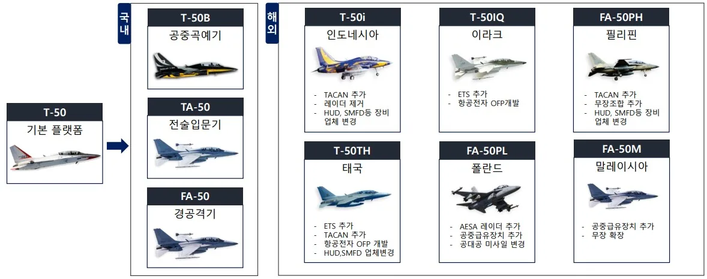
4.3 기술적/경영적 성과
4.3.1 기술적 성과
첫째, 한국항공우주산업은 T-50 개발 성공을 통해 독자적 항공기 개발 능력을 획득할 수 있었다. T-50 개발 이전에 면허생산 기술만 가지고 있던 기업이 T-50 개발 성공을 통해 <표 5>와 같이 선진국과 거의 유사한 기술 능력(기술수준 5.0 근접)을 얻을 수 있었다. 이러한 기술 지표는 기술 개발을 위한 장비, 기술자료, 인력 그리고 개발 결과물 항목을 종합 평가한 것이다(안영수∙김성배, 2007). <표 5>에서 볼 수 있듯이 한국항공우주산업은 체계종합, 항공기 조립, 항공기 설계/해석, 기체, 제작기술/치공구와 시험평가에서 매우 높은 기술적 역량을 쌓은 것을 확인할 수 있다.
<표 5> T-50 기술개발 연대기(전체요약)
* 출처 : 김성배, & 안영수. (2007). [산업연구원] 한· 미 간 T-50 항공기 공동개발을 위한 전략적 제휴
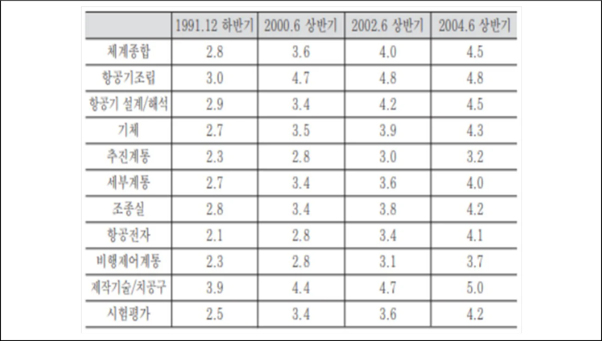
둘째, 한국항공우주산업의 T-50 개발 성공을 통한 초음속 전투기 기술 획득을 통해 우리나라는 명실상부한 항공 선진국 대열에 진입할 수 있게 되었다. 자체적으로 개발한 초음속 항공기를 보유한 국가는 전세계적으로 12 개국에 불과한데 그 중 우리나라가 포함되게 됨으로써 전투기를 자체 설계하고 생산할 수 있는 국가가 되었다. 또한 T-50 개발을 통해 축적한 초음속 전투기 개발 기술을 바탕으로 현재 개발이 진행중인 <그림 7>과 같은 4.5 세대 전투기(KF-21)를 개발할 수 있는 역량을 축적했다.
<그림 7> 한국형전투기(KF-21) 사진
* 출처 : 한국항공우주산업 홈페이지(홍보자료)
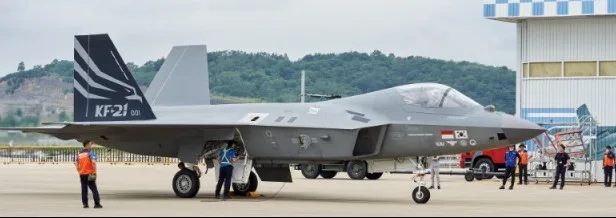
셋째, 한국항공우주산업의 특허를 <그림 8>과 같이 분석 해봤을 때 T-50 체계개발 기간 동안 특허 출원 수(380 건)가 타기간 대비 급증했음을 알 수 있으며, 키워드 분석을 했을 때도 항공기 동체, 비행시험, 생산공정과 관련된 항공기 체계종합 역량을 강화했음을 확인할 수 있다.
<그림 8> 한국항공우주산업 특허 분석 결과
* 출처 : 위즈도메인, 윈텔립스 특허 검색 활용
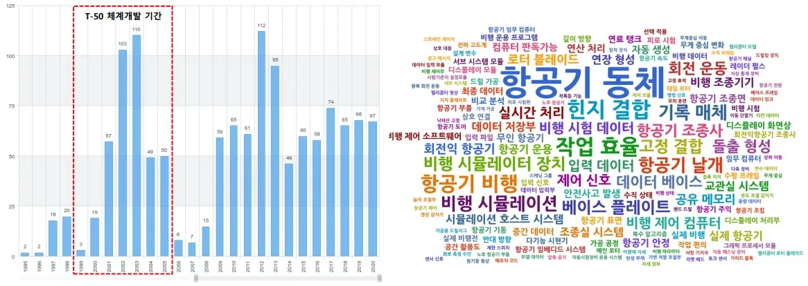
4.3.2 경영적 성과
T-50 개발 및 시장 진출 성공이 한국항공우주산업의 경영적 성과에는 어떠한 영향을 주었는가를 살펴보면 T-50 개발 성공 이후 <그림 9>와 같이 매출액이 지속적으로 증가했음을 알 수 있다. T-50 을 개발하고 있던 1999 년 ~ 2005 년 동안의 기술개발기에는 저조한 매출실적을 보였으나, T-50 개발에 성공하고 본격적으로 시장에 진출하기 시작한 2006 년 시점부터 지속적인 매출액 상승이 있었음을 확인할 수 있다. 증가한 매출액에서 T-50 이 기여한 정도가 어느 정도였는지를 보기 위해 매출액이 가장 높았던 2015 년 매출 구성을 상세히 살펴봤을 때, 매출액 중 T-50 수출이 차지하는 비중이 28%나 차지할 정도로 큰 기여를 했음을 알 수 있다.
<그림 9> 한국항공우주산업 매출액 추이 및 매출구성
* 출처 : 한국항공우주산업 전자공시(DART) 재구성, IR 자료 참고 작성
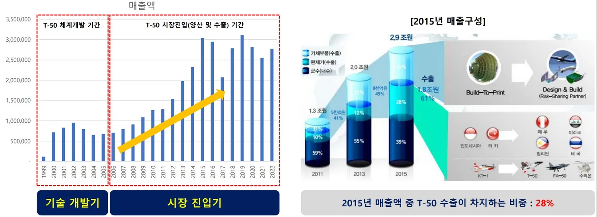
앞서 살펴본 2015 년 매출구성에서 T-50 이 차지하는 비중 외에 최근 5 개년 매출액에서 차지하는 비중을 <그림 10>과 같이 살펴봐도 모두 평균적으로 30%의 높은 비중을 차지하고 있는 것을 알 수 있다. 이처럼 한국항공우주산업은 T-50 개발 성공 이후 성공적인 시장 진입을 통해 T-50 을 국내 및 해외에 판매하면서 안정적인 캐쉬 카우(cash cow)를 제공하는 주력 제품으로 잘 활용하고 있음을 확인할 수 있다.
<그림 10> 한국항공우주산업 매출액 및 매출 구성(최근 5 년 / 단위 : 백만원, %)
* 출처 : 한국항공우주산업 홈페이지 재무정보 자료
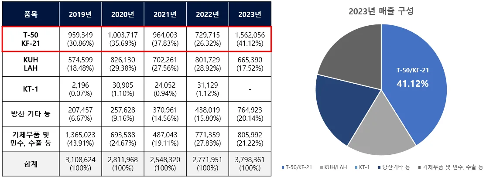
제 5 장 연구결과
항공산업의 후발주자이자 F-16 면허생산 경험만 가지고 있었고 축적된 전투기 개발 경험이 전혀 없었던 한국항공우주산업이 T-50 초음속기 기술개발과 시장에서 성공할 수 있었던 요인을 파악하기 위하여 사례분석을 통해 도출한 성공요인은 다음과 같다. 기술개발에 성공할 수 있었던 요인은 암묵지의 형식지화와 통합적 조직 구성으로 도출하였으며, 시장에서 성공할 수 있었던 요인은 시장지향적 개발과 거점시장 공략, 파괴적 혁신으로 도출하였다.
5.1 암묵지의 형식지화
항공산업은 전투기의 경우 20 만개의 부품으로 이루어져 있는 대표적인 시스템 통합(system integration) 산업으로 과거로부터의 경험 축적도가 기술혁신의 기반이 되는 산업이다. 미국과 유럽이 항공산업이 현재까지 강점을 발휘하고 있는 요인도 과거의 경험으로부터 축적된 유산적 지식(heritage knowledge)을 암묵지(tacit knowledge)로 가지고 있기 때문이다. 그렇다면 항공산업의 후발주자이자 축적된 경험이 없었던 한국항공우주산업이 T-50 초음속기 개발과 같은 기술개발에 성공한 요인이 무엇일까 살펴보면, 결국 항공 기술 선진업체로부터 기술이전 받은 암묵지를 형식지화하고 이를 잘 내재화했기 때문이라고 볼 수 있다.
한국항공우주산업이 선진업체들이 보유한 암묵지를 어떻게 형식지화하고 내재화했는지를 보기 위해 Nonaka(1994)가 제시한 SECI 모델을 바탕으로 살펴보았다. 첫째, 사회화(socialization) 단계에서 한국항공우주산업은 Lockheed Martin 社에서 파견된 개발 경험이 많은 Technical Assistance(T/A)들이 기술 습득을 할 수 있도록 도와주는 선생님 역할을 하도록 하여 단기간에 기술을 습득하였다. T/A 들이 가진 축적된 경험을 1 대1 기술교습을 통해 암묵지로서 받아들이는 과정을 거치면서 암묵지를 암묵지로 받아들이는 과정을 잘 수행했다. 둘째, 표출화(externalization) 단계에서 한국항공우주산업은 Lockheed Martin 社를 통해 공식적으로 받은 도면 및 기술자료들 뿐만 아니라 개인적으로 확보한 지식 또는 기술자료를 문서화하기 시작했다. 즉, 한국항공우주산업은 Lockheed Martin 社의 암묵적 지식을 암묵지에만 머물러있게 한 것이 아니라 이를 그림이나 글로 표현하는 문서화하는 작업을 통해 암묵지를 형식지화 하였다. 셋째, 연결화(combination) 단계에서는 확보되고 문서화한 형식지들을 다시 조직 내 정보공유시스템에 저장하여 서로 조합되고 편집되는 과정을 거쳐 좀 더 복잡하고 체계적인 또 다른 형식지로 창출하였다. 해당 단계를 통해 여러 형식지들과의 새로운 조합 및 창출을 하면서 형식지를 더욱 고도화할 수 있었다. 넷째, 내면화(internalization) 단계에서 한국항공우주산업은 앞선 단계에서 획득하고 조합한 암묵지와 형식지를 모아 동일 분야에 관심을 가진 엔지니어들이 연구팀 단위로 결성하여 자신들이 가진 기술지식에 대해 지속적으로 토의하는 과정을 거쳐 지식을 다시 암묵지화하고 내면화하였다. 안영수∙김성배(2007) 연구에서 <그림 11>과 같이 확인한 바에 따르면 T-50 에 대한 탐색개발 및 체계개발 동안에 전문 스터디 그룹 및 전문가 포럼의 활동 횟수가 꾸준히 증가하였으며 이에 따른 논문 발행 건수도 상승세를 보이고 있음을 알 수 있다. 스터디 그룹에 참여한 개인도 해당 세미나를 준비하면서 본인이 가진 암묵지와 형식지를 정리하여 이를 더욱 내면화할 수 있었으며, 조직 입장에서도 스터디 그룹을 통해 구성원 간의 내부 공유 활성화와 논문 산출물을 통해 암묵지와 형식지를 내면화할 수 있었다. 이와 같이 축적된 지식은 조직 내에 내면화되어 T-50 을 성공적으로 개발하는데 중요하게 작용하였으며, 추후 수리온(KUH-1) 및 소형무장헬기(LAH) 회전익기 개발 프로젝트, 한국형 전투기(KF-21) 개발 프로젝트 등에도 적극 활용되어 조직의 개발 역량을 강화시키는 역할을 하였다.
<그림 11> 한국항공우주산업 R&D 자율 스터디 그룹 및 논문 작성 현황(94 년 ~ 03 년)
* 출처 : 김성배, & 안영수. (2007). [산업연구원] 한· 미 간 T-50 항공기 공동개발을 위한 전략적 제휴
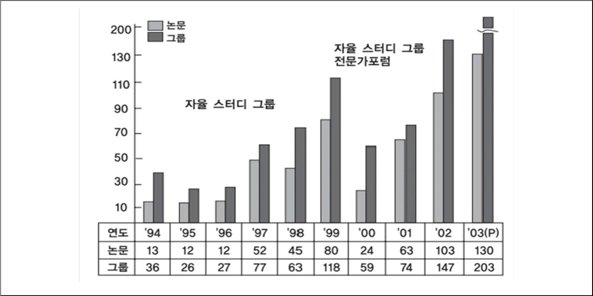
5.2 통합적 조직 구성
항공산업은 모든 기능과 부품 관계가 매우 복잡하며 상호 밀접하게 연결되어 있는 대표적인 ‘Integral Architecture’를 가진 산업이다. <그림 12> 예시에서 볼 수 있듯이 항공기 엔진에 대한 미세한 설계 변경이 이뤄지게 되더라도 항공기 전체 계통에 모두 영향을 주게 된다. 설계 변경에 따라 연료 시스템의 연료 공급 및 연결부에 대한 영향, 동력전달 계통의 토크 튜브와 인풋 샤프트 요구조건 영향, 엔진 기체구조 관련 영향, 엔진의 전기적 제어를 위한 제어 로직 및 전기 배선 영향과 심지어 조종석 계기판과 조종간 비행제어에 대한 영향까지 모두 파악을 해야 하는 상호 연결성을 가진다. 또한, 이러한 설계변경에 대한 영향이 개발 부서에서의 활동에서만 끝나는 것이 아니라 실제 항공기를 만들어야 하는 생산 부서, 협력업체와 품질을 관리해야 하는 구매/품질 부서와 설계 변경에 따른 사업적 타당성 및 계약적 사항을 정부기관에 설명해야 하는 영업/사업관리 부서에도 영향을 주게 된다.
<그림 12> 항공산업의 기능/부품간 복잡성 및 한국항공우주산업의 통합적 조직 구성
* 출처 : 본인 작성
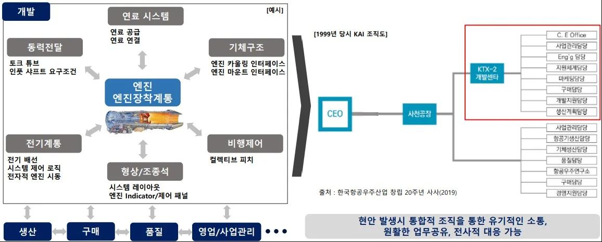
<그림 13> 고등훈련기 예상 소요 대수 및 T-50 판매전망
* 출처 : 이주성, 남미영, 백종호, & 전영훈. (2008). 국방산업 기술추격을 위한 R&D 거버넌스 전략
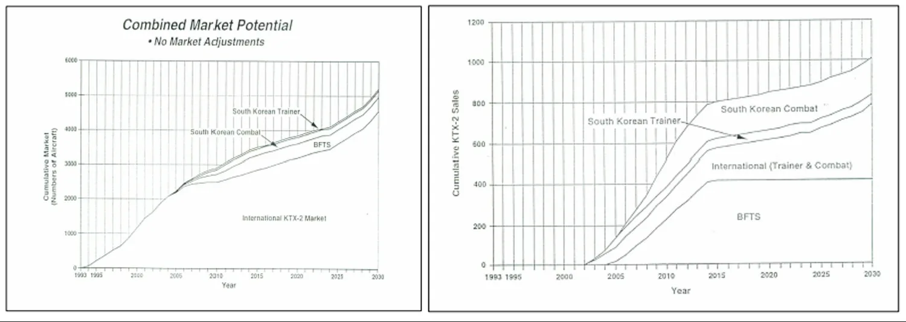
한국항공우주산업은 T-50 개발 당시 항공기가 가지는 기능 및 부품 간의 복잡성을 통제하기 위해 조직 내에 개발 및 사업과 관련된 모든 기능부서를 ‘KTX-2(T-50) 개발센터’라는 하나의 통합적 조직 내에 배치함으로써 개발을 성공적으로 완수해 나갔다. 하나의 Task Force(T/F)와 같은 조직 내에 사업관리 담당, 엔지니어링 담당, 마케팅 담당, 구매 담당, 생산 및 품질 담당과 경영지원 담당 부서를 모두 한 곳에 배치함으로써 어떠한 개발 현안이 발생했을 때 서로 유기적으로 소통하고 원활한 업무공유와 전사적인 대응이 가능하도록 하였다. 이와 같은 통합적 조직구성은 한국항공우주산업이 이후에 맡은 타사업에도 적용되어 개발 프로젝트를 성공적으로 완수하는데 큰 역할을 하고 있다.
5.3 시장지향적 개발 / 거점시장 공략
한국항공우주산업이 T-50 개발 성공 이후 시장에서 성공할 수 있었던 요인은 개발 계획 수립 단계에서부터 시장 지향적인 개발 계획을 수립했다는 점에서 찾을 수 있다. 첫째, 상호 보완적인 제품 포지셔닝을 통해 선진국 항공(방산) 기업의 주력 제품 전투기와의 직접적인 경쟁을 회피했으며 오히려 협력을 유도한 점을 성공요인으로 꼽을 수 있다. 개발 대상을 선진업체들이 최신식 전투기로 치열하게 경쟁하고 있는 전투기 시장보다 경쟁이 덜 치열한 고등훈련기 겸 경공격기 시장을 목표로 함으로써 선진업체들과 상호 보완적인 위치를 차지했다. 둘째, 항공 선진업체(Lockheed Martin 社)의 투자를 성공적으로 유도했다. 美 공군은 최신식 고성능 전투기 개발에는 많은 비용을 투입하나 훈련기와 같이 상대적으로 저성능 항공기의 경우에는 신규 항공기 개발에 들어가는 막대한 비용을 절감하기 위해 새로운 항공기 모델 개발을 위한 개발비를 투입하지 않는다. 대신 훈련기의 경우에는 다른 나라에서 개발한 훈련기 플랫폼을 바탕으로 자국 회사와 함께 미 공군이 원하는 훈련기를 제작하여 납품하도록 하고 있다. 우리나라는 이러한 점을 잘 활용하여 Lockheed Martin 社에게 우리나라 정부의 개발비와 업체 투자를 바탕으로 초음속 고등훈련기를 함께 개발하여 세계시장에 판매하자고 제안하였으며, 이러한 점이 잘 받아들여져 Lockheed Martin 社의 투자금을 확보할 수 있었다. Lockheed Martin 社의 투자를 이끌어 냄으로써 더 적극적인 기술지원을 유도할 수 있었으며, 시장진입기에 그들이 세계시장에서 가지고 있는 마케팅 역량을 십분 활용할 수 있었다. 셋째, 항공기에 대한 설계 개념 수립 단계에서부터 시장 지향적인 설계 개념을 수립했다. 계획 수립 당시에는 훈련기 중에 초음속기가 존재하지 않았다. 하지만 미래에는 차세대 전투기(F-22, F-35, Rafale 등)의 훈련을 위해서는 최첨단 초음속 훈련기가 필수적이라고 예측하였으며, 앞으로 군수예산이 한정되고 신규 기종 개발을 위한 개발비 과도소요 등의 문제를 고려했을 때 초음속 고등훈련기 겸 경공격기 시장이 선호될 것으로 예상하여 T-50 설계 개념을 수립하였다. 이주성 외(2008)에 나와있는 <그림 13> 좌측 그래프에서 볼 수 있듯이 2010 년 정도에 약 2,900 대의 초음속 고등훈련기의 수요가 있을 것이라 예상했다. 또한, T-50 이 생산되는 시기를 2003 년으로 잡고 교체율을 62.5%, 가격 경쟁률을 80%로 예측했을 때 시장 점유율은 약 25%로 예상했다. 이렇게 예상했을 때 <그림 13> 우측 그래프와 같이 미 공군 차세대 고등훈련기 소요대수 400 대, 우리나라 공군 고등훈련기 70 대, 우리나라 경공격기 200 대와 국제 판매 330 대만 잡아도 약 1,000대의 시장이 열릴 것으로 예상하여 거점시장을 공략하였다. 이러한 예상을 바탕으로 설계 단계에서부터 고등훈련기를 경공격기로 개조 가능하도록 설계 개념을 수립하였으며, 실제 현재 T-50 판매 대수도 <그림 13>과 유사한 양상을 보이고 있다.
5.4 파괴적 혁신
현대 전투기의 성능과 기능이 고도화됨에 따라 이를 운용할 조종사의 비행교육 및 훈련의 중요성이 날로 커지고 있다. <그림 14>에서 볼 수 있듯이, 전투기에 탑재되는 소프트웨어의 복잡성을 나타내는 지표인 코드 라인 수(Line of Code)는 T-50 개발 시점을 기점으로 급격히 증가하였다. 이는 기술 발전에 따라 전투기의 속도와 기능이 향상되었음을 의미한다. 그러나 이러한 변화로 인해 기존의 베스트셀러 아음속 훈련기인 이태리의 M-346 이나 영국의 Hawk-128 등으로는 증가한 전투기의 복잡성에 대응하는 적합한 교육을 제공하기 어려워졌다.
반면, T-50 은 마하 1.5 의 속도와 60%에 달하는 첨단전자부품 비중 등 최신 전투기에 버금가는 성능과 기능을 갖추고 있다. 이러한 T-50 을 통한 교육은 조종사가 추후 F-22, F-35 등의 최신 전투기를 운용할 때 필요한 훈련 시간을 획기적으로 단축시킬 수 있으며, 전환 교육을 용이하게 한다는 장점이 있다. 따라서 T-50 의 등장은 전투기 조종사 교육 시장에서 파괴적 혁신을 일으켰다고 볼 수 있다.
<그림 14> 군용 전투기에서의 소프트웨어 복잡성 증가(Thousands of Line of Code)
* 출처 : Aerospace Vehicle Systems Institute. (2023). Exponential Growth of System Complexity.
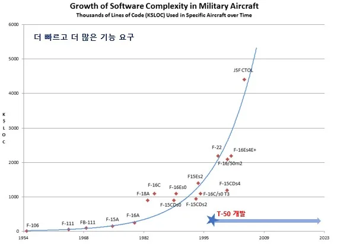
한국항공우주산업은 <그림 15>와 같이 T-50 개발 성공 및 시장 판매를 통해 덜 까다로운 고객들을 대상으로 간단하고 편리하며 저렴한 제품을 공급함으로써 기존의 시장 질서를 파괴하고 새로운 시장을 창출하는 파괴적 혁신을 일으켰다. 전투기를 제조하고 판매하는 기존 기업들(Boeing 社, Lockheed Martin 社 등)은 수익 창출이 작은 Low-end 시장인 고등 훈련기 겸 경공격기 시장을 간과하고 가장 최신식의 전투기만을 만들어 most demanding customer 들을 만족시키는 sustaining strategy 를 펼쳤다. 기존 기업들이 파괴적 혁신의 징후를 알고 있었다 하더라도 기존 기업들의 RPV(Resource, Process, Value)는 정부의 예산을 받아 최신식 전투기를 개발/판매하는데 초점이 맞춰져 있었기 때문에 훈련기 시장의 등장에 대해 알았어도 변화하기가 어려웠다. 반면에 한국항공우주산업은 least demanding customer 들을 대상으로 저성능∙저비용의 T-50(FA-50)이라는 적정한 제품을 공급함으로써 훈련기 겸 경공격기 시장에서 Low-end disruption 을 이끌어 냈다. 또한 한국항공우주산업은 그때 당시에 초음속기인 동시에 고등훈련기와 경공격기 역할을 모두 수행할 수 있는 항공기가 존재하지 않았다는 것을 고려했을 때 New market disruption 도 이뤄냈다. T-50(FA-50) 판매를 통해 공군력이 약한 나라들(전투기 1 대라도 아쉬운 나라들)에게 고등훈련기와 경공격기 역할을 동시에 수행할 수 있는 Multi-role 전투기를 제공함으로써 non consumer 들을 consumer 들로 전환시키는 시장 창출을 해냈다.
<그림 15> T-50(FA-50)의 파과적 혁신(low end disruption, new market disruption)
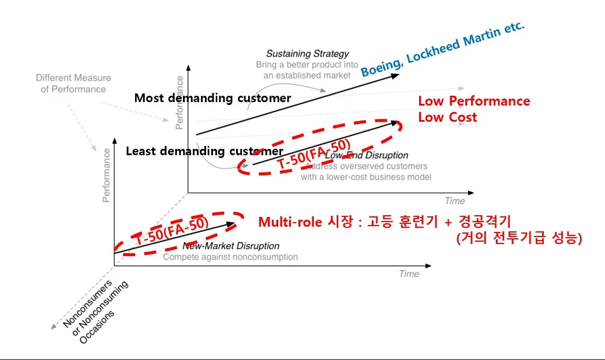
<그림 16> 그래프와 같이 군용으로 사용되는 항공기를 가격과 성능(최대속도,
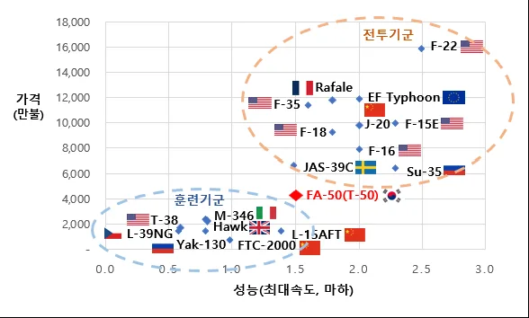
마하)을 기준으로 전투기군과 훈련기군으로 분류해보면 T-50(FA-50)이 창출한 초음속 고등훈련기 겸 경공격기(전투기급 성능) 시장을 더욱 명확히 볼 수 있다.
고성능 전투기(F-22, F-35, 유로 타이푼, Rafale, F-18, Su-35 등)의 경우에는 성능이 매우 뛰어나지만 가격이 비싸다는 단점을 가지고 있는 반면, 훈련기(M-346, Hawk, T-38, Yak-130, FTC-2000 등)의 경우 가격은 저렴하지만 성능이 초음속보다는 한단계 낮은 아음속의 성능을 가진다. T-50(FA-50)은 이러한 시장 분류 속에서 거의 전투기와 가까운 초음속의 성능을 내지만 고등훈련기의 역할도 겸용할 수 있는 시장을 창출함으로써 공군력이 약한 나라들을 대상으로 시장의 non consumer 들을 consumer 로 전환시켰다.
<그림 16> 성능 대비 가격 비교(전투기군, 훈련기군)
* 출처 : 제 3 차 항공산업발전 기본계획(2021), Aero Corner 홈페이지, Jane’s 참고 작성
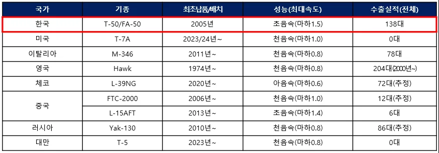
고등훈련기 겸 경공격기 시장에서 한국항공우주산업이 개발한 T-50(FA-50)이 어떠한 위치를 차지하고 있는지를 조금 더 상세히 살펴보면 <표 6>과 같다. 성능(최대 속도) 기준에서는 시장 내 타 기종보다 가장 높은 마하 1.5 를 달성하고 있음을 알 수 있으며, 수출 실적 측면에서도 영국의 Hawk 다음으로 높은 수출 실적(138 대)을 보이고 있다. T-50(FA-50)의 최초 납품 및 배치는 2005 년이지만 영국 Hawk 의 경우에는 1974 년에 이루어졌다는 것을 고려했을 때 최근 기준으로는 T-50(FA-50)이 시장에서 가장 큰 호응을 얻고 있다는 것을 알 수 있다.
<표 6> 고등훈련기 겸 경공격기 시장 기종별 성능 및 수출실적
* 출처 : Jane’s Market Analysis 참고 작성
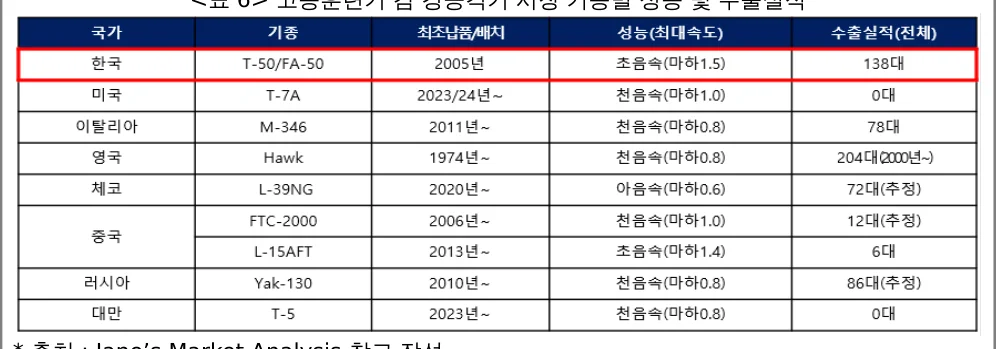
제 6 장 결론 및 시사점
본 연구는 항공산업의 후발주자이자 F-16 면허생산 경험만 가지고 있었고 축적된 전투기 개발 경험이 전혀 없었던 우리나라 한국항공우주산업(KAI)이 어떻게 T-50(FA-50) 기술개발과 시장에서 성공할 수 있었는가에 대한 분석을 진행하였다.
본 연구를 통해 도출한 결론 및 시사점은 다음과 같다. 첫째, 항공기 개발 후발주자인 한국항공우주산업이 초음속기 기술 개발에 성공할 수 있었던 요인으로는 암묵지의 형식지화(문서화 역량)과 통합적 조직 구성이 있다는 것을 밝혔다. 한국항공우주산업은 개발 초기부터 모든 연구개발 계획, 기술 지식, 각 기능별 책임과 역할을 명확화 할 수 있는 문서화하는 역량을 잘 발휘하였으며, 암묵지를 형식지화하고 다시 이를 내부 지식 공유 과정을 통해 암묵지화하여 조직 내 지식을 내재화하는 역량을 통해 개발에 성공할 수 있었다. 또한, 한국항공우주산업은 T-50 개발 당시 항공기가 가지는 기능 및 부품 간의 복잡성(integral architecture)을 통제하기 위해 조직 내에 개발 및 사업과 관련된 모든 기능부서를 ‘KTX-2(T-50) 개발센터’라는 하나의 통합적 조직 내에 배치함으로써 개발을 성공적으로 이끌어 나갈 수 있었다.
둘째, 항공기 시장에서 후발주자인 한국항공우주산업이 세계 시장에서 성공할 수 있었던 요인으로는 시장지향적 개발, 거점시장 공략 및 파괴적 혁신에 있음을 밝혔다. T-50 계획 수립 당시 연구개발기획 단계에서부터 시장 지향적인 설계 개념을 수립하였으며, 상호 보완적인 제품 포지셔닝을 통한 선진업체의 투자 및 적극적인 기술지원을 유도했다. 또한, 기존의 선진 업체들(first mover)이 간과하고 있는 시장(초음속 고등훈련기 겸 경전투기 시장)에 T-50(FA-50)이라는 적정한 제품을 제공함으로써 파괴적 혁신을 성공적으로 이끌어 냈다.
셋째, 한국항공우주산업의 T-50(FA-50) 초음속기 개발 및 시장 진입 성공을 통해 항공산업을 육성하고자 하는 후발주자들에게 줄 수 있는 시사점은 다음과 같다. 우선 항공산업(방산)과 같이 대규모의 투자자금(전투기의 경우 약 5 조 ~ 10 조)이 필요하고 개발하는데 10 년이 넘게 소요되는 공공성이 높은 산업의 경우 정부의 적극적인 기술 수요 정책을 통한 국내 연구 개발 기회 창출이 필수적임을 확인할 수 있었다. 즉, 국내 연구개발을 위한 정부 예산을 바탕으로 국외업체의 참여를 유도해 기술 이전을 받을 수 있는 기회 자체를 창출하는 것이 우선적으로 가장 중요하다는 것을 확인하였다. 하지만, 이러한 정부의 정책이 뒷받침된다 하더라도 이를 흡수해야 하는 기업의 역량과 전략이 준비되어 있지 않으면 기술개발 및 시장 진출에 성공하기 힘들 것이다. 따라서, 후발기업의 기술 추격 및 시장 진입에 있어서 정부의 정책, 기업의 기술적 능력도 매우 중요하지만 앞서 성공요인으로 살펴본 기업의 경영전략(지식경영, 인사조직 전략, 시장 및 마케팅 전략)도 매우 중요하게 작용한다는 것을 알 수 있다.
Reference
- 과학기술정보통신부. (2021. 12.). 세계 기술패권 경쟁시대, 기술주권 확보에 국가역량 결집(보도자료).
- 관계부처 합동. (2021. 03.). 제3 차 항공산업발전 기본계획 (2021~2030).
- 국방기술품질원. (2020). 무기체계 연구개발단계 품질관리 기술지원 가이드북.
- 김성배, & 안영수. (2007). [산업연구원] 한· 미 간 T-50 항공기 공동개발을 위한 전략적 제휴 분석과 정책과제. 국립중앙도서관 연계자료, (2), 0-0.
- 대통령실 보도자료. (2022).12 대 국가전략기술, 대한민국 기술주권 책임진다.
- 백서인·박동운·조용래·이다은·이선아·윤여진(2021), ｢글로벌 기술패권 경쟁에 대응하는 주요국의 기술주권 확보 전략과 시사점｣, STEPI Insight 285.
- 이주성, 남미영, 백종호, & 전영훈. (2008). 국방산업 기술추격을 위한 R&D 거버넌스 전략 연구: T-50 개발사례를 중심으로. 정책자료, 1-174.
- 임상민, & 박재찬. (2012). 국제기술이전, 네트워크 흡수역량, 공동개발의 결합을 통한 전략기술의 글로벌 추격 (Global Catch-up) 사례: 한국항공우주산업(KAI)의 T-50 과 AIDC 의 IDF 경국 개발 비교. 전략경영연구, 15(1), 89-112.
- 전영훈. (2011). T-50 끝없는 도전 : 골든이글 신화창조의 비밀을 밝히다. 월간항공.
- 한국항공우주산업 IR 자료(2023.2.24.).
- 한국항공우주산업 창립 20 주년 사사(2019).
- Christensen, C. M. (2013). The innovator's dilemma: when new technologies cause great firms to fail. Harvard Business Review Press.
- Coulson, C. A. (1958). POLANYI, Personal Knowledge.
- Edler, J., Blind, K., Frietsch, R., Kimpeler, S., Kroll, H., Lerch, C., ... & Walz, R. (2020). Technology sovereignty: From demand to concept [technologie souveränität: Von der forderung zum konzept] (No. 02/2020). Fraunhofer Institute for Systems and Innovation Research (ISI).
- Hobday, M. (1998). Product complexity, innovation and industrial organisation. Research policy, 26(6), 689-710.
- Jane’s Market Analysis(https://www.janes.com/).
- Nonaka, I. (1994). A dynamic theory of organizational knowledge creation. 30 Organization science, 5(1), 14-37.
- Pavitt, K. (1984). Sectoral patterns of technical change: towards a taxonomy and a theory. Research policy, 13(6), 343-373. 31